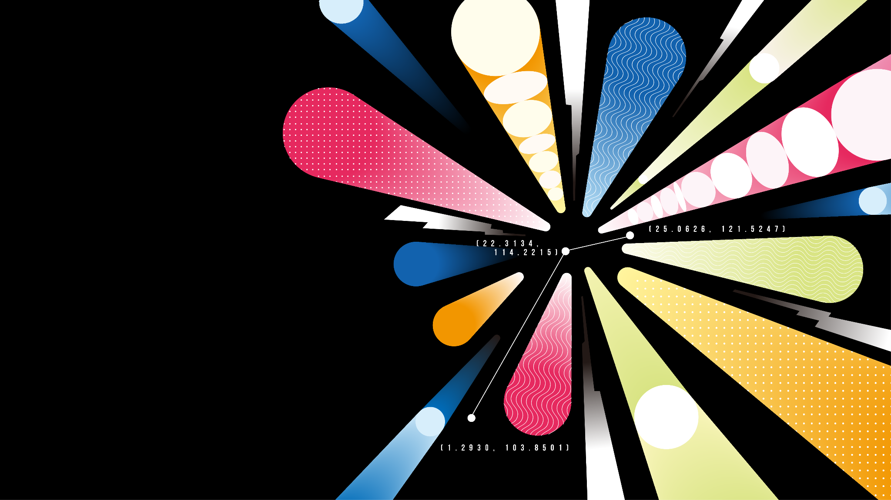
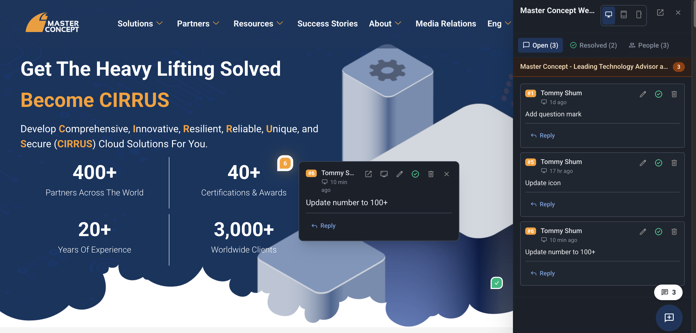

AI in Motion · Solution Day 2026
我們用 AI
做日常工作
市場部 × 人力資源部 — 日常在用的流程
Case 1 · Marketing 市場部
更新網站
由設計稿到上線，全程自動。
新頁面提供 Figma 連結
Figma
現有頁面點一下，寫下要改的地方
Wilco
AI Agent建立 · 修改
WP Buddy

網站上線經同事確認
masterconcept.ai
網站開發與更新，由 AI 無縫完成。

請在此貼上 Wilco 截圖
shots/wilco.png
shots/wilco.png
在網站上點一下，寫下要改的內容 — AI Agent 收到後直接改。
Case 2 · Human Resources 人力資源部
招聘篩選
每一份 CV 都讀過，再交到你手上。
職位要求這個職位需要什麼
Job criteria
候選人 CV來自不同招聘渠道
CV
AI Agent閱讀 · 比對 · 評分
Careers
Fit Score0 – 100 分
75 分以上 = Strong fit
每一份 CV 都看過。打開名單之前，已經排好序。
職位：Cloud Solutions Engineer — AI 逐份讀 CV，對照這個職位的要求評分
陳大文8 年雲端架構
88
Strong fit
✓ GCP 專業認證 · 大型遷移項目✗ 未用過 Terraform
李小明網絡工程背景
64
Partial fit
✓ 網絡與保安紮實✗ 缺公有雲實戰經驗
黃美儀IT 支援轉職
37
Weak fit
✓ 溝通能力強✗ 未符合主要技術要求
分數只是用來排序，決定見哪一位的仍然是人。
以前
現在
網站更新
排期、等開發靠截圖來回確認
在頁面上指一下AI Agent 直接改
招聘篩選
數以千計的 CV來自不同渠道，逐份打開、逐份對照職位要求
AI 評分，自動排序更快找到合適的人
Your turn
你的流程
可以是下一個
只要工作中有等待和重複，就可以這樣做。